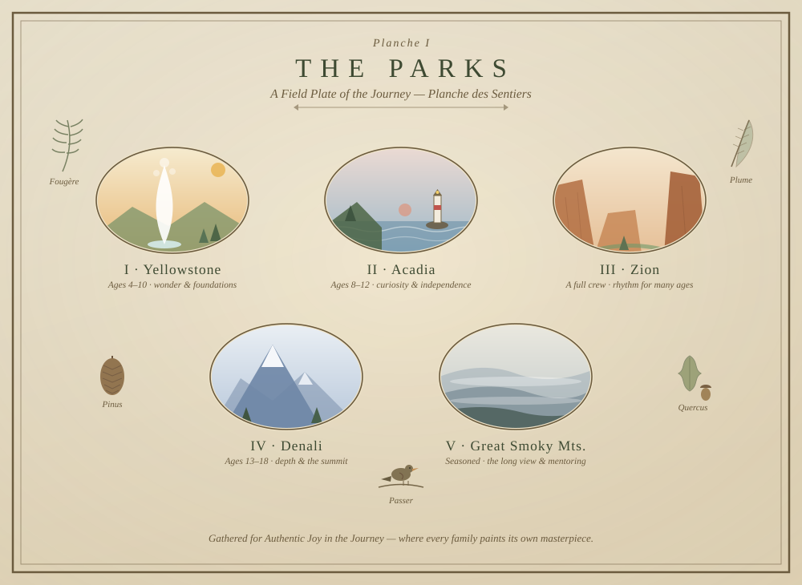

Guided Journeys
Every family's homeschool is its own wild, beautiful country.
Answer a few questions and the Compass Guide will match you to a national-park journey built for right where you are. Then you paint it your own way — keep what fits, save some for later, veer off-trail. Some of us follow the path; some of us (hi) splash the color where it lands. Both make a masterpiece.
"I'm not afraid of storms, for I am learning how to sail my ship."
The Trail Map
Curious where you might land? Every journey has its own country. Tap one to preview its trail — or let the Compass Guide choose for you.
A Field Plate
In the spirit of the old natural-history plates — every park a specimen, every family its own field study.

Rabbit Trails
Some of the richest learning happens when you chase a rabbit — a question, a wonder, a thread that pulls you happily off the main trail. Rabbit trails are those short, delightful detours you take together. Here's one to begin with: a gentle weekly walk through who God is, one verse a day.
Pick a week. Each has an anchor verse to hide in your heart, plus a supporting verse for each day. Read them in your family's own Bible and translation.
More rabbit trails — a nature study, an artist study, a hymn a week — can join this warren over time.
{kind=link}